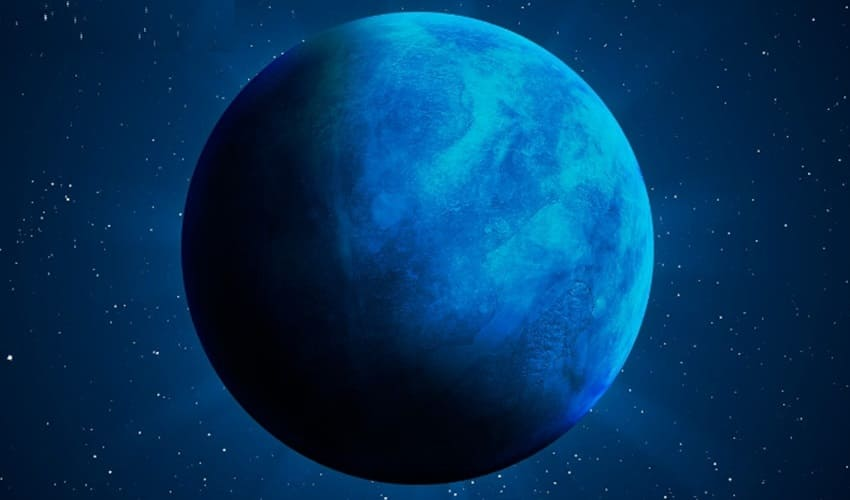
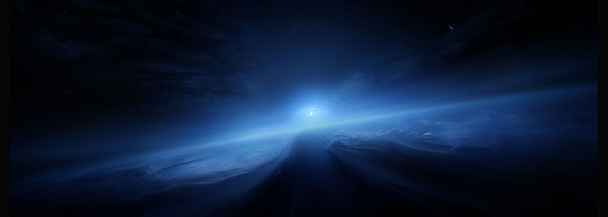
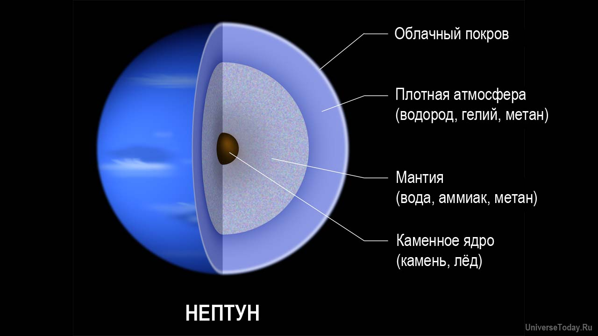
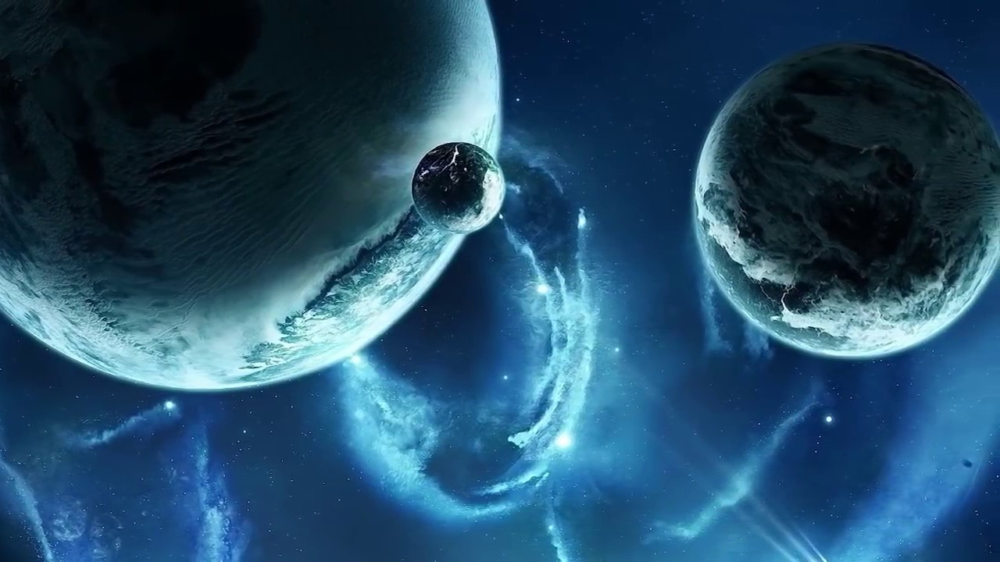
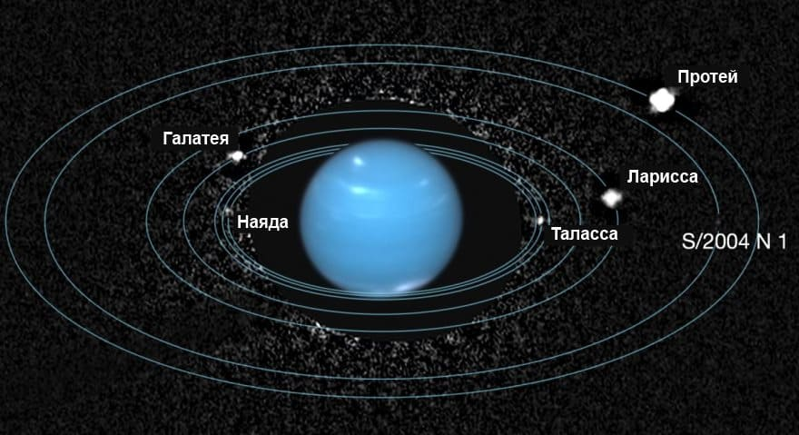

Нептун
×
Нептун является восьмой планетой от Солнца и последней из известных планет. Не смотря на то, что это третья по массивности планета, она является всего лишь четвертой с точки зрения диаметра. Благодаря своей синей окраске Нептун получил имя римского бога моря.
По мере совершения тех или иных научных открытий у ученых часто возникают споры, какая именно из теорий заслуживает доверия. Открытие Нептуна является наглядным примером таких разногласий.
После того, как 1781 году была открыта планета Уран, астрономы заметили, что его орбита подвержена значительным колебаниям, которых в принципе быть не должно. В качестве обоснования этого непонятного явления была предложена гипотеза о существовании планеты, гравитационное поле которой и вызывает орбитальные отклонения Урана.
Тем не менее, первые научные труды, связанные с существования Нептуна появились только в 1845-1846 году, когда английский астроном Джон Коуч Адамс опубликовал свои расчеты о положении этой тогда еще неизвестной планеты. Однако, несмотря на то, что он предоставил свою работу Королевскому научному сообществу (ведущей английской научно-исследовательской организации), его труд не вызвал ожидаемого интереса. И только год спустя французский астроном Жан Жозеф Леверье также представил расчеты, которые были поразительно похожи на расчеты Адамса. В результате независимых оценок научной работы двух ученых, научное сообщество наконец-то согласилось с их выводами и начало поиски планеты в области неба, на которую указывали исследования Адамс и Леверье. Планета как таковая была обнаружена 23 сентября 1846 года немецким астрономом Иоганном Галлом.
До облета космическим аппаратом Voyager 2 в 1989 году, о планете Нептун у человечества было очень мало информации. Миссия позволила получить данные о кольцах Нептуна, числе лун, атмосфере и вращении. Кроме того, Voyager 2 выявил существенные особенности спутника Нептуна под названием Тритон. На сегодняшний день мировые космические агентства не планируют каких-либо миссий к этой планете.

Атмосфера Нептуна
×
Верхние слои атмосферы Нептуна на 80% состоят из водорода (H2), 19% гелия и небольших примесей метана. Подобно Урану, синяя окраска Нептуна обусловлена его атмосферным метаном, который поглощает свет на длине волны, которая соответствует красному цвету. Однако, в отличие от Урана, у Нептуна более глубокий синий цвет, что говорит о присутствии в атмосфере Нептуна компонентов, которых нет в атмосфере Урана.
Погодные условия на Нептуне имеют две отличительные черты. Во-первых, как было замечено во время пролета миссии Voyager-2, это так называемые темные пятна. Эти бури сопоставимы по своим масштабам с Большим красным пятном на Юпитере, однако сильно отличаются по своей продолжительности. Шторм известный как Большое Красное Пятно длится уже в течение многих столетий, а темные пятна Нептуна способны существовать не более нескольких лет. Информацию об этом удалось подтвердить благодаря наблюдениям космического телескопа «Хаббл», который был направлен на планету всего через четыре года после того, как Voyager 2 совершил свой облет.
Вторым примечательным погодным явлением планеты является стремительно перемещающиеся шторма белого цвета, которые получили называние «Скутер». Как показали наблюдения, это своеобразный тип ливневой системы, размеры которой намного меньше, чем размеры темных пятен, а продолжительность жизни еще короче.
Подобно атмосферам других газовых гигантов, атмосфера Нептуна делится на широтные полосы. Скорость ветра в некоторых из этих полос достигает почти 600 м/с, то есть ветра планеты можно назвать самыми быстрыми в Солнечной системе.

Структура Нептуна
×
Нептун, подобно Урану, состоит из двух слоев: ядра и мантии. Само ядро твердое и в 1,2 раза массивнее планеты Земля. Мантия представляет собой невероятно горячую и плотную жидкость, состоящую из воды, аммиака и метана. При этом вес мантии составляет от десяти до пятнадцати масс Земли.
Не смотря на то, что Нептун и Уран очень похожи по своей структуре, они имеют существенные различия. В то время как Уран излучает примерно такое же количество тепла, которое получает от Солнца, Нептун излучает почти 2,61 раза больше энергии, чем получает. Температура поверхности двух космических тел сопоставима, но Нептун получает только 40% солнечного света, от того количества которое получает Уран. Кроме того, огромное количество внутреннего тепла планеты способствует образованию чрезвычайно быстрых потоков ветра в верхних слоях атмосферы.

Орбита и вращение Нептуна
×
После открытия Нептуна, размер известной Солнечной системы увеличился примерно в два раза. При среднем расстоянии орбиты 4,50 х 10 в степени 9 км солнечному свету требуется почти четыре часа и сорок минут для того, чтобы достигнуть верхних слоев атмосферы Нептуна. Данное расстояние указывает на то, что продолжительность года на Нептуне составляет около 165 земных лет.
Эксцентриситет орбиты Нептуна — .0097 является вторым наименьшим после Венеры. Столь незначительная величина эксцентриситета делает орбиту Нептуна очень близкой к кругу по своей форме. Подобно Юпитеру и Сатурну, скорость вращения Нептуна намного выше этого показателя у планет земной группы в Солнечной системе. Период вращения планеты составляет чуть более 16 часов, что делает Нептун обладателем третьей по продолжительности ночи среди локальных планет.

Спутники и кольца Нептуна
×
На сегодняшний день известно, что Нептун имеет тринадцать спутников. Из этих тринадцати только одна обладает большой и сферической формой. Существует научная теория, согласно которой Тритон — самый крупный из спутников Нептуна, представляет собой карликовую планету, которая была захвачена гравитационным полем и поэтому его естественное происхождение остается под вопросом. Доказательства этой теории исходит от ретроградной орбиты Тритона — спутник вращается в противоположном направлении по отношению к Нептуну. Кроме того, С зарегистрированной температурой поверхности -235 °C, Тритон является самым холодным известный объектом в Солнечной системе.
Считается, что Нептун имеет три основных кольца: Адамса, Леверье и Галле. Эта кольцевая система намного слабее, чем у других газовых гигантов. Кольцевая система планеты настолько тусклая, что некоторое время считалось кольца неполноценны. Однако изображения, которые передал Voyager 2 показали, что это на самом деле не так и кольца полностью опоясывают планету.